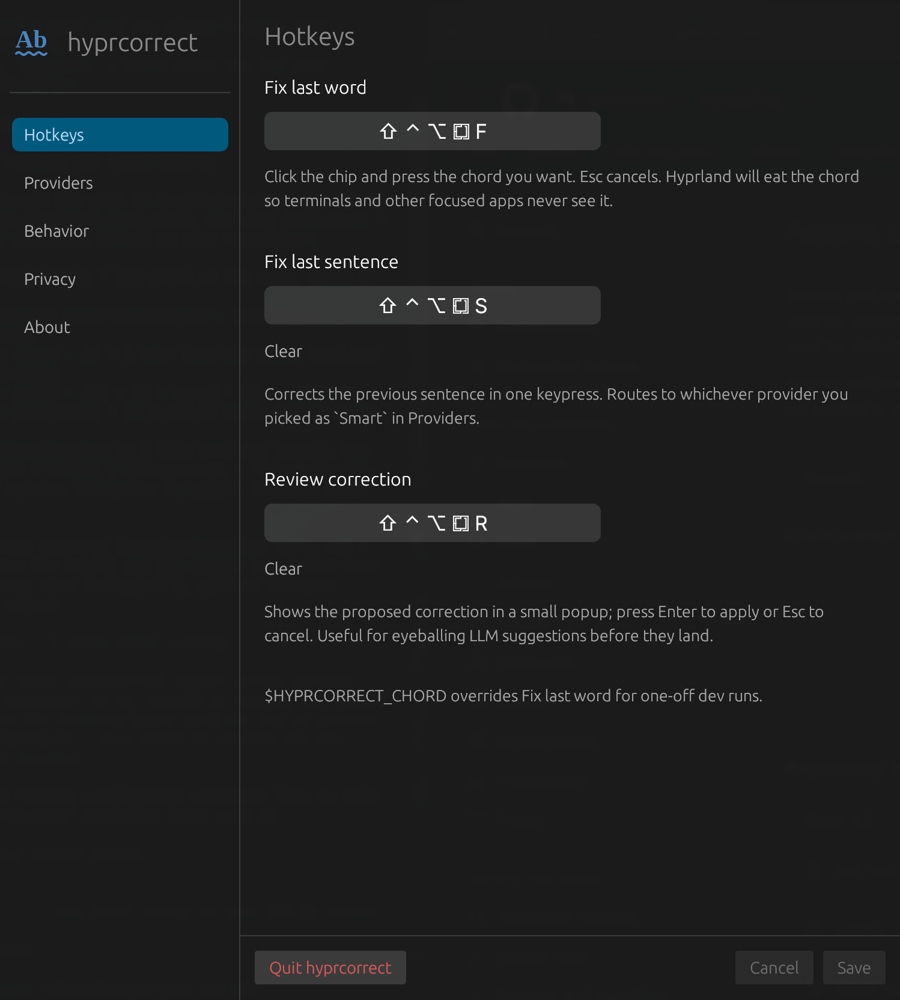

HyprCorrect is a keyboard-driven spelling and typo corrector for the whole desktop. The word or sentence you just typed is checked and fixed in place — in any focused app, including terminals. No menus. No mouse. Nothing to click before the fix lands.
A global keystroke buffer remembers what you just typed. The chord backspaces the misspelled word and types the correction in its place — works the same in your editor, your chat app, and your shell.
Default chord ⇧⌃⌥⌘F. Backspaces the last word in the focused window's buffer and types the top spellbook suggestion. Falls back to clipboard / selection when the buffer is empty.
Default chord ⇧⌃⌥⌘S. Sends the sentence around the caret through the smart provider — LLM, LanguageTool, or spellbook — so context-dependent fixes land too.
Default chord ⇧⌃⌥⌘R. Same as fix-sentence, but pops a small window with the proposed text first — Enter to apply, Esc to cancel. Eyeball LLM suggestions before they land.
The engine is a keystroke buffer plus synthetic input — not accessibility scraping. The shell line-editor accepts the backspaces and the new word the same way it accepts what you just typed.
Pick apps from a dropdown — populated from running window classes — whose keys should never be buffered. Password managers and sensitive consoles stay invisible to HyprCorrect.
Hyprland focus events partition the buffer per window. Switching apps doesn't poison another's history; returning restores the buffer you left behind.
The fix-word chord runs on the fast offline backend; the smart provider handles sentence-level fixes. Failures fall through to spellbook so the chord never silently no-ops.
Bundled Hunspell-compatible dictionary. Instant. Runs offline. The default for fix-last-word and the fallback when anything else fails.
POST to your own self-hosted server's /v2/check. Preferences offers an optional one-click Install with Docker that pulls and runs the upstream image — no Java install on your side.
Anthropic Claude or OpenAI. Sends the sentence around the caret for context-aware fixes including homophones (their / there / they're). API key lives in your OS keychain.

Right-click the tray icon and open Preferences. Record any Super / Ctrl / Shift / Alt combo for each chord, pick your default and smart providers, and pin a privacy blocklist — all without restarting the daemon.
SIGHUP to the daemon — chords, providers, and blocklist swap in without a restart.
inter_key_delay_ms handles apps that drop characters under wtype's default speed.
HyprCorrect is a single Rust daemon plus an egui preferences window.
On Linux it's Wayland-native: evdev capture,
xkbcommon translation, wtype emit, and a
Hyprland-installed keybind. macOS support is a planned milestone
sharing the same core.
hyprctl keyword bind.
ksni tray with pause and quit. The daemon uninstalls its Hyprland bind on exit so dev rebuilds don't pile up stale binds.
libsecret, never in plain-text config files.
Free, open source, Hyprland-first. The chord is yours. The dictionary is yours. The API key never leaves your machine.